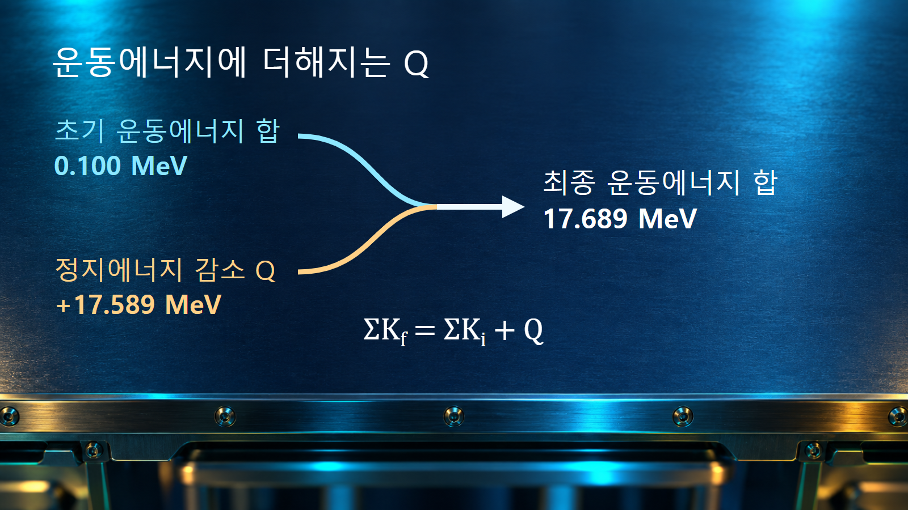
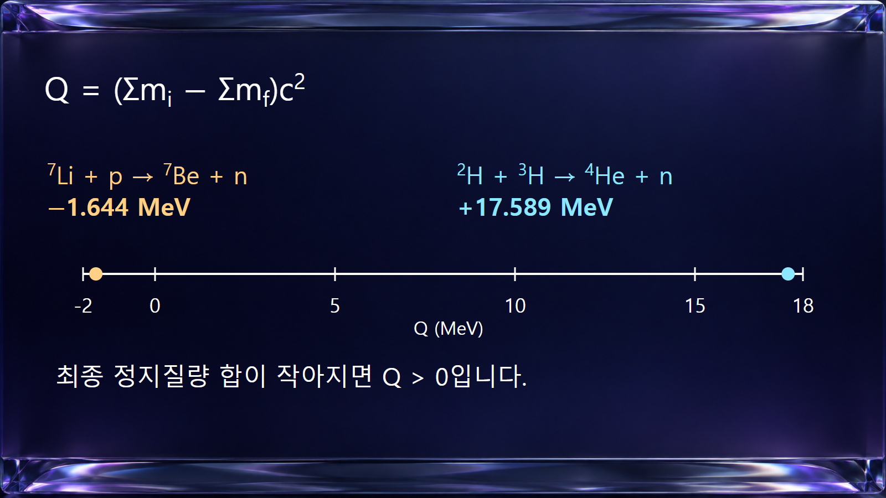

질량·에너지와 핵반응 · 026
핵반응의 Q값
반응 전후 정지질량 차이가 만드는 순에너지
핵반응의 Q값은 반응 전후 입자들의 정지질량 합이 얼마나 달라지는지를 에너지 단위로 표시합니다. Q가 양수이면 그 차이만큼 생성물의 운동에너지나 복사에너지로 나올 수 있습니다. 입사입자가 가져온 운동에너지는 별도로 더하며, Q 하나로 생성물 각각의 에너지나 반응 발생률을 결정하지는 못합니다.
1. 반응식의 양쪽에서 정지질량을 합합니다
입사입자 a가 표적 A와 반응하여 생성물 b와 B를 만드는 a + A → b + B를 생각합니다. 각 입자의 정지질량을 m으로 쓰면 Q = [ma + mA − mb − mB]c2로 정의합니다. 초기 질량 합에서 최종 질량 합을 빼므로, 최종 쪽이 가벼우면 Q는 양수가 됩니다. 여기서 질량은 입자의 속도에 따라 늘어나는 값이 아니라 불변질량을 뜻합니다.
Q는 반응에 참여하는 핵종과 최종 상태를 지정해야 정해집니다. 같은 표적과 입사입자라도 다른 생성물을 만들거나 생성핵이 들뜬상태에 남으면 다른 Q값을 갖습니다. 원자로의 출력처럼 시간당 에너지를 나타내는 양이 아니며, MeV로 표시한 Q는 해당 반응 한 번의 에너지수지에 사용합니다.
2. 입사 운동에너지는 Q와 별도로 더합니다
질량을 가진 입자들만 최종 상태에 있는 닫힌 반응에서는 에너지 보존으로 ΣKf = ΣKi + Q를 얻습니다. K는 운동에너지이며, 합은 반응에 포함한 모든 입자에 대해 취합니다. 최종 상태에 감마선도 있으면 그 광자의 에너지를 왼쪽에 더하여 ΣKf + ΣEγ = ΣKi + Q로 씁니다. 광자는 정지질량이 0이지만 에너지가 없는 입자는 아닙니다.
예를 들어 정지 표적에 운동에너지 0.100 MeV인 입사입자가 들어가고 Q가 약 +17.589 MeV이면, 최종 입자들의 운동에너지 합은 약 17.689 MeV가 됩니다. 이 값 전부가 중성자 한 개에 주어진다고 해석하면 안 됩니다. 다른 생성물의 반동도 있으며, 에너지의 분배에는 운동량 보존과 방출 방향을 함께 적용합니다.

3. 예시 1: 중수소와 삼중수소 반응의 양의 Q값
반응 2H + 3H → 4He + n에서는 질량수 합이 2 + 3 = 4 + 1이고 전하수 합이 1 + 1 = 2 + 0으로 같습니다. AME2020의 중성 원자 질량을 사용하면 초기 합은 2.014101777844 + 3.016049281320 = 5.030151059164 u입니다. 최종 합은 4.002603254130 + 1.008664915900 = 5.011268170030 u입니다.
질량 차이 0.018882889134 u에 1 u·c2 ≈ 931.49410372 MeV를 곱하면 Q ≈ +17.589 MeV를 얻습니다. 양의 부호는 정지에너지의 감소분이 운동에너지 등으로 바뀔 수 있음을 나타냅니다. 이 계산은 질량 자료로 에너지수지를 확인한 것이며, 플라스마 조건이나 실제 반응 빈도를 계산한 것은 아닙니다.
4. 예시 2: 리튬의 중성자 생성 반응은 에너지를 요구합니다
7Li + p → 7Be + n에서는 질량수 합이 8로, 전하수 합이 4로 보존됩니다. 중성 원자 질량을 이용할 때 양성자 자리에는 수소 원자 질량을 넣어 양쪽의 전자 수를 맞춥니다. 초기 합은 7.016003434260 + 1.007825031898 = 8.023828466158 u이고, 최종 합은 7.016928714000 + 1.008664915900 = 8.025593629900 u입니다.
초기에서 최종을 빼면 −0.001765163742 u이므로 Q ≈ −1.644 MeV가 됩니다. 생성물의 정지에너지 합이 더 크므로 입사 운동에너지 일부를 그 증가분에 써야 합니다. 음의 Q는 반응이 어떤 조건에서도 불가능하다는 뜻이 아닙니다. 다만 정지 표적 실험에서는 생성물의 운동량도 보존해야 하므로 최소 입사 운동에너지가 단순히 1.644 MeV와 같지는 않습니다. 이 문턱에너지의 차이는 다음 글에서 계산합니다.

5. 질량 자료의 종류와 자릿수를 맞춥니다
| 계산 선택 | 포함해야 하는 항목 | 잘못 섞을 때의 문제 |
|---|---|---|
| 원자핵 질량 | 반응식의 핵과 자유 양성자·중성자 질량을 일관되게 사용합니다. | 중성 원자 질량을 일부에만 넣으면 전자 정지질량이 남습니다. |
| 중성 원자 질량 | 양쪽 전자 수를 맞추며, 위 리튬 예시의 p에는 수소 원자 질량을 대응합니다. | 전자 수가 맞아도 전자 결합에너지 차이는 정확히 상쇄되지 않습니다. |
| 생성핵의 들뜬상태 | 최종 핵의 들뜸에너지를 정지에너지에 포함합니다. | 바닥상태 Q를 그대로 쓰면 즉시 이용 가능한 운동에너지를 크게 평가합니다. |
| 계산 정밀도 | 입력 질량의 유효 자릿수와 불확실성을 유지한 뒤 마지막에 반올림합니다. | 질량을 먼저 거칠게 반올림하면 작은 차이로 구하는 Q의 오차가 커집니다. |
두 수치 예시는 동일한 AME2020 원자 질량 자료에 기반하며, MeV 수준 설명을 위해 결과를 소수 셋째 자리까지 제시합니다. 전자 수의 상쇄와 전자 결합에너지의 상쇄는 서로 다른 조건입니다. 맨핵 반응의 더 정밀한 Q값이 필요하면 전자 결합에너지와 전하 상태를 보정해야 합니다. 서로 다른 평가 연도의 질량 값을 자릿수만 길게 이어 붙여 정밀도가 높아졌다고 판단하지 않습니다.
6. Q가 같아도 반응 속도와 방출 스펙트럼은 다릅니다
양의 Q는 에너지 방출이 가능한 방향을 알려 주지만 반응을 시작하기 쉽다는 보장은 하지 않습니다. 하전입자 사이에는 쿨롱 장벽이 있고, 실제 반응 확률은 입사에너지와 반응단면적에 따라 달라집니다. 따라서 양의 Q를 근거로 낮은 온도에서 반응이 빠르게 진행된다고 결론 내리지 않습니다.
생성핵이 바닥상태 대신 들뜸에너지 Ex에 남는 반응채널에서는 Qexc = Qgs − Ex가 됩니다. 예를 들어 설명용으로 Qgs = 5.0 MeV, Ex = 2.0 MeV를 가정하면 그 채널의 Q는 3.0 MeV입니다. 이 수치는 특정 핵종의 실제 준위를 뜻하지 않습니다. 이후 들뜬핵이 감마선을 내며 바닥상태로 내려가면 그 복사와 반동까지 전체 에너지수지에 포함합니다.
7. 에너지수지 검산에서 먼저 확인할 사항
계산 결과를 읽을 때에는 먼저 반응식의 핵종·전하·최종 상태를 확인하고, 다음으로 같은 종류의 질량 자료를 양쪽에 적용합니다. Q를 구한 뒤에는 입사 운동에너지를 더하고, 생성물 운동에너지와 복사에너지에 빠진 항목이 없는지 살핍니다. 생성물 한 개의 에너지, 반응의 문턱, 단위 시간당 발생 횟수는 이 수지식만으로 정해지지 않으므로 각각 운동량 보존과 반응 자료를 추가합니다.
핵심은 Q를 ‘입사에너지를 포함한 총 방출에너지’와 구분하는 데 있습니다. 정지질량 차이는 반응채널의 성질을, 입사 운동에너지는 실험 조건을 나타내며, 두 값이 합쳐져 최종 상태의 에너지 배분을 제한합니다.